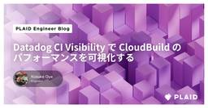

PLAID Engineer Blog - 株式会社プレイド
https://tech.plaid.co.jp/
株式会社プレイドのエンジニアブログです。プレイドエンジニアのユニークなパーソナリティを知ってもらうために執筆しています。
フィード

Datadog CI Visibility で Cloud Build のパフォーマンスを可視化する
PLAID Engineer Blog - 株式会社プレイド
この記事は Datadog Advent Calendar 2024 の 18 日目の記事です。 こんにちは、プレイドの Developer Experience & Performance チームでエンジニアをしている大矢です。Datadog の好きな機能は CI Visibility と Split Graphです。
2日前
MongoDB to BigQuery: フルマネージドなリアルタイムレプリケーションの実現
PLAID Engineer Blog - 株式会社プレイド
プレイドでエンジニアをしている塩澤です。今回は MongoDB から BigQuery へのリアルタイムレプリケーションシステムをマネージドサービスのみを用いて開発したので紹介します。
4日前

Mongoose の callback を Promise に移行する手法
PLAID Engineer Blog - 株式会社プレイド
Developer Experience & Performance チームでエンジニアをしている大矢です。今回は JavaScript の非同期処理で使われている callback を Promise に移行する手法について、具体的な事例をもとに紹介します。
24日前
npmパッケージの代わりに独自の仕組みを構築して定数ファイルを配布する運用に切り替えた経緯と移行プロセス
PLAID Engineer Blog - 株式会社プレイド
KARTEの複数のシステム間で共有する定数ファイルを、これまで社内向けのnpmパッケージとして配布していたところから、代わりとなる独自の仕組みを構築して管理する方式に切り替えたことと、その移行プロセスについて。
1ヶ月前
プレイドインターン体験記：プロダクトの改善活動から得た学び
PLAID Engineer Blog - 株式会社プレイド
こんにちは、桂田一輝と申します。2024年8月から10月の3ヶ月間、プレイドのEcosystemチームでソフトウェアエンジニアとしてインターンシップを行いました。インターンを通じて、Ecosystemチームが開発しているKARTE Craftというプロダクトの改善業務に携わってきました。そこで得られた学びについてお伝えします。
2ヶ月前
KARTE MessageにおけるFCMのSendAll API廃止対応について
PLAID Engineer Blog - 株式会社プレイド
KARTE Messageで使用しているFCMのsendAll APIが廃止となるため、APIの置き換えを行った後負荷試験を行なった。
2ヶ月前
OLAP-DBでのreal-time ingestionをカラムナに最適化する技術
PLAID Engineer Blog - 株式会社プレイド
カラムナフォーマットの利点を最大限活かすために書き込み処理、特にリアルタイムの書き込み処理における技術的な課題とOSS DBの具体的なアプローチを紹介しています
2ヶ月前
MongoDBをサービス無停止で継続的かつ安全にバージョンアップしている話
PLAID Engineer Blog - 株式会社プレイド
社内で広く用いられているデータベースであるMongoDBのバージョンアップ業務に携わったので，その過程で得られた知見についてまとめようと思います．
3ヶ月前
新進気鋭の認証サービスClerkを実プロダクトで使いこなせ
PLAID Engineer Blog - 株式会社プレイド
こんにちは。プレイドでWicleを開発しているchakeです。 Wicleはプロダクトを使うユーザーの行動を分析し、改善するサイクルを助けるプロダクトアナリティクスサービスです。先日パブリックベータ版をリリースし、だれでもオンライン上からサインアップすることができるようになりました。
3ヶ月前